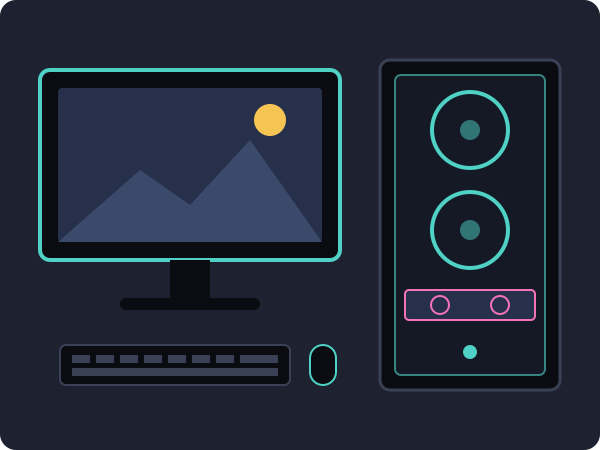

Levná sestava
kolem 15 000 Kč
Na Full HD a méně náročné hry jako Fortnite, CS2 nebo Minecraft.
Postavit si vlastní herní PC není tak těžké, jak to vypadá. Stačí vědět, z čeho se počítač skládá, kolik peněz na něj chcete dát a v jakém pořadí díly zapojit.
Sestavení počítače svépomocí vám navíc ušetří peníze a hlavně víte, co přesně uvnitř máte.

Každý počítač potřebuje stejné základní díly. U herního PC je nejdůležitější grafická karta, protože ta má na výkon ve hrách největší vliv.
Cena záleží hlavně na tom, v jakém rozlišení a na jaké detaily chcete hrát. Tady jsou tři orientační sestavy:
kolem 15 000 Kč
Na Full HD a méně náročné hry jako Fortnite, CS2 nebo Minecraft.
kolem 25 000 Kč
Zvládne většinu nových her ve Full HD na vysoké detaily.
40 000 Kč a více
Pro hraní ve 1440p nebo 4K a pro streamování.
Před začátkem se vždy vybijte od statické elektřiny, například dotykem kovové části skříně.